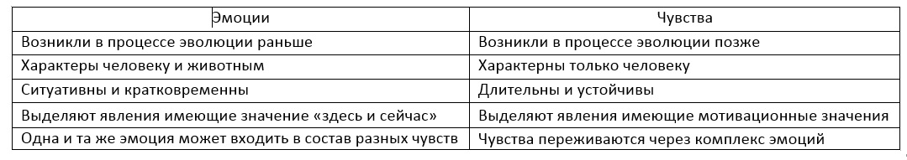

Вопросы:
- Понятие "эмоции" и "чувства".
- Виды эмоциональных переживаний.
- Высшие чувства.
1 вопрос
Эмоции – это переживания человеком своего отношения к объектам и явлениям действительности в данный момент времени.
Чувства – это переживания человеком своего оценочного отношения к значимым объектам действительности.

Функции эмоций:
- Оценочная – выражается в обобщенной и быстрой оценке явлений действительности.
- Регуляторная – эмоции выполняют важную приспособительную задачу, тем самым регулируя поведение и деятельность.
- Побудительная – возникшие эмоции способны активизировать внутренние резервы человека.
- Коммуникативная – связана с возможностью информировать другого человека о своих переживаниях и своем отношении.
Свойства эмоций:
- Универсальность – относительная независимость эмоций от вида потребностей ее вызвавшей.
- Доминантность – сильная эмоция способна подавлять противоположную себе.
- Заразительность – человек способен передавать свое эмоциональное состояние другим людям (особенно в толпе).
- Полярность – почти каждой эмоции существует противоположная по знаку.
- Переключаемость – предметом одной эмоции может являться другая эмоция.
- Амбивалентность – одновременность переживания положительных и отрицательных эмоций и чувств.
Виды эмоциональных переживаний:
- Чувственный тон – смутная эмоциональная окраска любого психического процесса.
- Настроение – это эмоциональное состояние которое в течение длительного времени окрашивает поведение и деятельность человека; может не иметь четкой причины; тесно связано с физиологическим состоянием.
- Аффект – самая бурная эмоциональная реакия.
Признаки аффекта:
- Всегда наступает в ответ на уже возникшее событие.
- По типу аффекта может протекать любая эмоция.
- Возникает резко и внезапно.
- Ослабевает сознательный, волевой контроль.
- Сопровождается сильными двигательными реакциями.
- Заканчивается эмоциональным шоком.
- Страсть – представляет собой сплав мотивов, эмоций и чувств; всегда избирательна и предметна; тесно связана с волей.
- Стресс – эмоциональное напряжение, возникающее в ответ на экстремальное воздействие.
Виды стресса:
- Физиологический (если страдают функциональные системы организма)
- Психический:
- Эмоциональный (в состоянии угрозы, обиды, унижения).
- Информационный (при перегрузке и недостатке информации).
Фазы стресса:
- Реакция тревоги – происходит мобилизация организма, подготовка к новой ситуации; в кровь выбрасываются гормоны стресса: адреналин, кортизол.
- Фаза сопротивления – происходит адаптация за счет сопротивления стрессору, но продолжают расходоваться внутрення энергия и ресурсы.
- Фаза истощения – исчерпываются внутренние ресурсы, ухудшается состояние здоровья, хараткерны нервные срывы.
- Фрустрация – состояние, возникающее при невозможности удовлетворить важную потребность, переживается человеком «как чувство лишения».
Эмоции по влиянию на активность делятся:
- Стенические – повышают активность деятельности.
- Астенические – снижают активность деятельности.
Виды базовых эмоций (по К. Изарду):
- Радость – положительная эмоция, возникает при возможности наиболее полно удовлетворить потребности.
- Удивление – не имеет четкого знака, возникает в ответ на внезапное обстоятельство.
- Гнев – отрицательная эмоция, возникает при внезапных препятствиях на пути удовлетворения важных потребностей.
- Страдание - протекает в форме эмоционального стресса или фрустрации.
- Отвращение - вызывается объектами, соприкосновение с которыми вступает в резкое противоречие с нравственными или эстетическими принципами человека.
- Презрение - возникает в межличностных отношениях, при рассогласованности жизненных позиций.
- Страх - возникает пр реальной или вымышленной опасности, при угрозе жизненному благополучию.
Биологические реакции на страх:
- Аггрессия;
- Бегство;
- Оцепенение.
- Стыд - выражается в осознании несовпадения своих мыслей и потупков с ожиданиями других людей или собственными идеалами.
3 вопрос
Высшие чувства – социально обусловлены, характеризуют внутренний мир человека, включают в себя когнитивный компонент.
Виды чувств:
- Моральные – переживаются при оценке действительности, при сравнении данных явлений с нормами и ценностями принятыми в обществе.
- Интеллектуальные – переживаются в результате успешной или неуспешной познавательной деятельности.
- Эстетические – представляют собой эмоциональное отношение к прекрасному и безобразному, трагическому и комическому, связаны с пониманием красоты и гармонии.
- Праксические – переживаются в результате осуществления какой-либо деятельности.